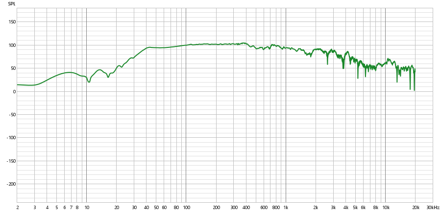
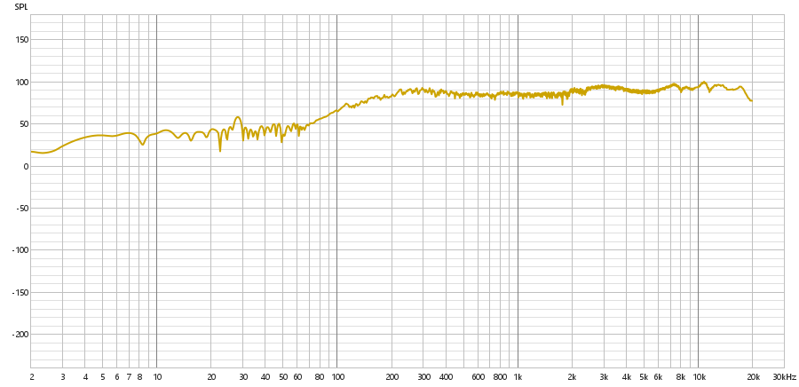
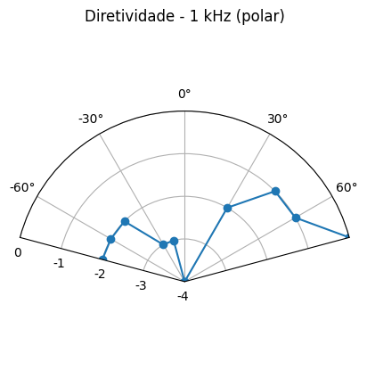

Aplicações em Voz, Áudio e Acústica
Aluno: Marcelo Goulart Salinas Vega | RA: 11201921598
Aluno: Gustavo Hiromitsu Watari | RA: 11202020983
Aluno: Alexandre Keiti Fukamati | RA:11202021788
Experimento 1 - Medidas Acústicas da Resposta Impulsiva de Salas
1. Objetivos
- Obter a resposta impulsiva acústica de uma sala
- Comparar os procedimentos de obtenção da Resposta Impulsiva
- Obter o tempo de reverberação RT60 de várias “salas”
- Efetuar outras medidas acústicas, segundo a norma ISO 3382-1.
2. Material Necessário
- 02 Microfones Capacitivo Behringer Omnidirecional
- 04 pedestais de solo de microfone
- 02 Microfones Dinâmicos SM57
- 03 interfaces M-Audio Fast Track Ultra 8R
- 03 réguas/filtros de linha, 3 tomadas cada
- Fonte Omnidirecional dodecaédrica com 12 alto-falantes
- Cabo de áudio bipolar
- 01 Amplificador de Potência 600W estéreo
- 03 notebooks com entrada FireWire
- 01 Software Audacity instalado em cada notebook
- 01 Software REW (roomeqwizard.com) em cada notebook
- Extensão para cabo de força de 15 metros
- Cabos diversos
3. Metodologia
-
Primeiramente, a cada Interface M-Audio Fast Track Ultra 8R foi conectado um jogo de microfones, uma interface sendo responsavel por controlar os microfones Dinamicos, e a outra responsavel pelos microfones Capacitivos.
Estas interfaces foram conectadas aos Notebooks para gravacao com o software Audacity.
Fonte Omnidirecional foi conectada ao notebook restante e posicionada no "palco" da sala.
Preparadas Bexigas de diversos tamanhos, que quando estouradas representarao nosso impulso sonoro utilizado para medicoes.
Microfones Dinamicos SM57 foram posicionados de forma cruzada entre si, representando os ouvidos de um ser humano com o objetivo de captar possiveis diferencas de percepcao entre ambos.
Microfones Capacitivos foram posicionados a 1m e a 10m da fonte sonora (palco do auditorio) com o objetivo de captar diferencas de percepcao sonora em diferentes distancias dentro da mesma sala.
A partir do palco do auditorio, foram estouradas bexigas de diferentes tamanhos, e o som produzido por esse evento foi captado pelos diferentes arranjos de microfones posicionados. Apos a captacao do impulso, foi utilizada a fonte Omnidirecional para realizar um Sweep em frequencias e tambem emitir Ruido Rosa, que tambem foram captados.
4. Medicoes e valores Teoricos
4.1 Imagens da Sala
Croqui - Sala de Auditorio

Vista da Sala de Auditorio

Palco da Sala de Auditorio
Montagem dos Microfones Dinamicos

Fonte Omnidirecional posicionada
4.2 Dimensoes da Sala
-
Experimento foi relizado em uma sala do tipo Auditorio no bloco A da Universidade Federal do ABC, Santo Andre, Bloco A.
Dimensoes estimadas: 19m x 12m x 6m
Volume (V) = Comprimento × Largura × Altura = 19 m × 12 m × 6 m = 1368 m³
Área do Piso = 19 m × 12 m = 228 m²
Área do Teto = 19 m × 12 m = 228 m²
Área da Parede 1 e 3 = 2 × (19 m × 6 m) = 2 × 114 m2 = 228 m²
Área da Parede 2 e 4 = 2 × (12 m × 6 m) = 2 × 72 m2 = 144 m²
Área Total (A) = Piso + Teto + Paredes = 228 + 228 + 228 + 144 = 828 m²
4.3 Propriedades da Sala
-
T estimado: (RT60 Teorico)
Pela fórmula de Sabine: Test = 0,163V/A
Test. ​ = 0.163 × (1368/828) ≈ 0.163 × 1.652 ≈ 0.269 segundos
-
distância mínima do microfone à fonte sonora:
ùëëùëöùëñùëõ = 2‚àö ùëâ/ùëêùëáùëíùë†ùë°
Usando V=1368 m3, c=340 m/s, e Test​≈0.269 s
distância mínima = 7,73 metros
4.4 Medicoes Realizadas
- Bexiga Pequena:
- Bexiga Grande:
- Ruido Rosa:
- Sweep
- Sweep Decay:
4.5 Processando os dados
-
Bexiga Pequena
Onde podemos ver as medidas obtidas atraves do REW:
T10 = 0.679s
T20 = 0.863s
T60 = 3 x T20 = 3 x 0.863s = 2.589s
TEDT (Tempo de Decaimento Adiantado) = 6 x T10 = 6 x 0.679s = 4.074s
Claridade C50 = 4.66dB
Claridade C80 = 7.27dB
Definicao D50 = 74.5%
-
Determinando Timbre Para Ruido Rosa
Tr(125) Tr(250) Tr(500) Tr(1k) Tr(2k) Tr(4k) 0.8 0.7 0.6 0.5 0.4 0.3 ùêµùëÖ = (ùëá125ùêªùëß+ùëá250ùêªùëß)/T500Hz+T1000Hz = 1.36
TR = (ùëá2000ùêªùëß+ùëá4000ùêªùëß)/T500Hz+T1000Hz = 0.64
6. Referências
ISO3382, Acoustics – Measurement of the Reverberation time rooms with reference to other acoustical parameters, 1997
MULLER, S., Transfer-Function Measurement with Sweeps, JAES, 2001
Experimento 2 - Dispositivos Eletroacústicos
1. Objetivos
Conjunto 1 - Medições em Alto Falantes
- Efetuar medições de Resposta em Frequência em Alto-falantes diferentes:
- Woofer
- Midrange
- Tweeter
Conjunto 2 - Testes Com Microfones
- Testes e gravações em microfones diferentes:
- Dinâmico de palco
- Capacitivo de Estúdio
- Capacitivo de Instrumentos
2. Materiais
Conjunto 1 - Medições em Alto Falantes
- Caixa Acustica TCL, 100W
- Caixa Acustica Sony (sub-woofer)
- Caixa Acustica Sony (Surround)
- 2 Bases para sustentacao
- 2 Microfones de Referencia Beringer ECM8000
- 2 Pedestais de Microfone
- 2 Cabos XLR de Microfone 3m
- 1 Interface M-Audio Fast Track Ultra 8 canais
- 1 Amplificador de potencia de audio Wattson 2200 de 600W
- 2 Cabos XLR-P10
- 1 Computador com Softwares REW, Audacity e entrada USB
- Cabos adicionais para interface e amplificador
Conjunto 2 - Testes Com Microfones
- 1 Microfone capacitivo AKG C214
- 1 Microfone Dinamico Shure SM57
- 2 Microfones capacitivos AKG PGA81
- 4 Pedestais de microfones
- 1 Interface M-Audio Fast Track Ultra 8 canais
- 1 Computador com Softwares REW, Audacity e entrada USB
- 1 Fone de ouvido envolvente AKG
- 1 Caixa Bluetooth 5W
4. Medicoes e Gravacoes
Conjunto 1 - Medições em Alto Falantes
Caixa Sony:
Near-Field (Microfone na Abertura)
Captacao da onda de audio em Campo Proximo (Near-Field)

Forma de Onda:
Audio Captado:
Espectro:
Espectrograma:
Near-Field (Microfone na Caixa)
Captacao da onda de audio em Campo Proximo (Near-Field)
Forma de Onda:
Audio Captado:
Espectro:
Espectrograma:
Far-Field (50cm)
Captacao da onda de audio em Far Field

Forma de Onda:
Audio Captado:
Espectro:
Espectrograma:
Tweeter:
Near-Field (Microfone na Abertura)
Captacao da onda de audio em Campo Proximo (Near-Field)

Forma de Onda:
Audio Captado:
Espectro:
Espectrograma:
Far-Field (27cm)
Captacao da onda de audio em Far Field

Forma de Onda:
Audio Captado:
Espectro:
Espectrograma:

4. Análises
-
Comparação entre o Alto-falante e o Tweeter da caixa TCL
As principais imagens que podem ser utilizadas para observar a diferença entre o alto-falante e o tweeter são as imagens do espectro. Observando as componentes de frequência, é perceptível que o subwoofer tem componentes de frequências constantes tanto em near quanto em far field para as faixas entre 100 Hz e 1 kHz, sendo que a frequência apresenta um crescimento quase que linear antes dessas faixas de frequências. Entretanto, as componentes de frequência posteriores a 1 kHz se apresentam de forma decrescente, principalmente na faixa entre 10 kHz e 20 kHz.
Em contrapartida, o tweeter possui o crescimento acontecendo até 1 kHz, sendo que as componentes de frequência se mostram constantes na faixa de 1 kHz a 10 kHz. Existe uma oscilação perceptível na faixa de 10 kHz a 20 kHz.
De forma geral, temos que o tweeter desse conjunto se responsabiliza principalmente pela faixa de 1 kHz a 10 kHz, incorporando amostras agudas, enquanto o subwoofer reproduz principalmente entre 100 Hz e 1 kHz.
-
Comparação entre Subwoofer e Surround Sony
Utilizando o espectro como referência, temos que as diferenças nas faixas de frequências também são o principal ponto neste caso. Para o tweeter, é observado um crescimento oscilatório da amplitude nas faixas de frequência entre 1 e 10 Hz, seguido por um crescimento quase linear no intervalo entre 10 e 200 Hz. No intervalo entre 200 Hz e 4 kHz, foi obtido um comportamento quase linear, indicando que essa é a principal frequência fornecida por esse falante. No fim do espectro, temos um comportamento oscilatório entre 5 e 20 kHz.
Diferente do tweeter, o subwoofer não apresenta um crescimento linear em nenhum ponto, mas a partir dos 3 Hz, começa a apresentar um crescimento acentuado em formato de curva, que se estende até cerca de 500 Hz. Com esse formato de curva, adquire um comportamento oscilatório até 8 kHz. Neste ponto, assume um comportamento completamente oscilatório, sem acompanhar a curva anterior.
Neste caso, foi observado que o Surround Sony cobre uma faixa de frequências mais ampla e apresenta maior equilíbrio entre as regiões médias e altas, enquanto o subwoofer se mantém mais eficiente nas faixas graves, com desempenho decrescente e irregular em frequências médias e altas.
-
Comparação entre os dois conjuntos (TCL e Sony)
Ao comparar os dois conjuntos — caixa TCL (alto-falante + tweeter) e sistema Sony (subwoofer + surround) —, percebe-se que cada um foi projetado com propósitos distintos em termos de resposta em frequência.
O conjunto da caixa TCL mostra uma divisão clara entre o alto-falante (atuando predominantemente entre 100 Hz e 1 kHz) e o tweeter (atuando com estabilidade entre 1 kHz e 10 kHz). Há um equilíbrio funcional, onde cada transdutor cobre eficientemente uma faixa específica do espectro, resultando em uma cobertura coerente e complementar das frequências audíveis.
Já o conjunto Sony (subwoofer + surround) apresenta uma sobreposição maior nas faixas médias (especialmente entre 200 Hz e 4 kHz), com o surround sendo responsável pela maior extensão espectral. O subwoofer do conjunto Sony apresenta uma curva mais acentuada e restrita, focada nos graves até 500 Hz, com pouca contribuição nas faixas superiores.
Dessa forma, conclui-se que o conjunto TCL apresenta uma segmentação mais tradicional entre os transdutores, favorecendo uma divisão mais clara entre graves e agudos, enquanto o conjunto Sony busca uma cobertura mais contínua e ampla, especialmente nas faixas médias, mas com maior sobreposição e irregularidade em altas frequências.
Experimento 3 - Array de Alto-falantes
Conjunto 1 - Array de Beamforming com Defasagem
Objetivos:- Testar um Line Phased Array de Alto Falantes, beamforming de delay
- 01 celular com App Spectroid (Android)
- 01 interface M-Audio Fast Track ultra, 8 canais
- 01 computador com softwares REW, Reaper, Audacity e Tracks Live
- 02 amplificadores de áudio de 4 canais, 6W/canal
- 01 torre de Array de 8 alto-falantes
- 08 cabos com conector P10
- 01 fonte de alimentação com dois canais 0-30V, 3A
- Cabos diversos para interface M-Audio e amplificadores
- Apoio de 30 cm de altura para a torre de Array de 8 alto-falantes
- Gabarito transferidor -90° a 90° impresso
- Linha (barbante) de 6m, com marcações em 1,5m, 3,0m e 6,0m
- 01 haste de referência para altura das medições (1,10m aprox.)
Conjunto 2 - Array de Bessel
Objetivos:- Testes e gravações em microfones diferentes:
- 01 interface M-Audio Fast Track ultra, 8 canais
- 01 computador com softwares REW, Reaper, Audacity e Tracks Live
- 01 amplificador de potência de áudio Watson 2200 de 600W
- 05 caixas acústicas 8Ω, 50W passivas
- 01 base de madeira
- Gabarito transferidor -90°-0°-90° impresso
- 01 celular com Spectroid (Android)
- 01 metro (5m)
Montagem conjunto 1: Array de Beamforming
Calibracao e Medicoes:
Com o array montado de acordo com a figura acima, foi iniciado o processo de calibracao de cada auto-falante.
Este processo foi realizado com o auxilio do programa Reaper, onde foram silenciados todos os canais para que seja possivel calibra-los um a um.
Foi utilizado o App Spectroid para medir a saida de cada um dos auto-falantes, e seu ganho foi ajustado para -14dBA, com um sinal de 250Hz.
As medidas foram obtidas posicionando o microfone do aparelho celular a 0.75m do centro do Array, variando entre -75 e 75 graus, com intervalos de 15 graus.
Foram utilizados sinais sonoros de 250Hz, 500Hz e 1kHz sem defasagem, e 1kHz e 2kHz com defasagem.
Resultados podem ser visualizados na tabela 1 abaixo:
| fteste Ângulo α |
250 Hz Calibração [dBA] |
500 Hz [dBA] |
1 kHz [dBA] |
|---|---|---|---|
| -75º | -18 | -18 | -19 |
| -60º | -18 | -19 | -19 |
| -45º | -20 | -19 | -19 |
| -30º | -21 | -20 | -20 |
| -15º | -20 | -20 | -20 |
| 0º | -21 | -16 | -21 |
| 15º | -21 | -17 | -21 |
| 30º | -23 | -20 | -19 |
| 45º | -22 | -18 | -18 |
| 60º | -24 | -17 | -18 |
| 75º | -22 | -19 | -17 |
| fteste Ângulo α |
1 kHz, defasagem 15º [dBA] |
2 kHz, defasagem 15º [dBA] |
|---|---|---|
| -75º | -21 | |
| -60º | -21 | |
| -45º | -23 | |
| -30º | -24 | |
| -15º | -24 | |
| 0º | -25 | |
| 15º | -21 | |
| 30º | -20 | |
| 45º | -24 | |
| 60º | -20 | |
| 75º | -21 |
Comparação: Cartesiano vs Polar
1 kHz – Frente (f)
Cartesiano
Polar
2 kHz – Horizontal (h)
Cartesiano
Polar
250 Hz – Frente (f)
Cartesiano
Polar
500 Hz – Frente (f)
Cartesiano
Polar